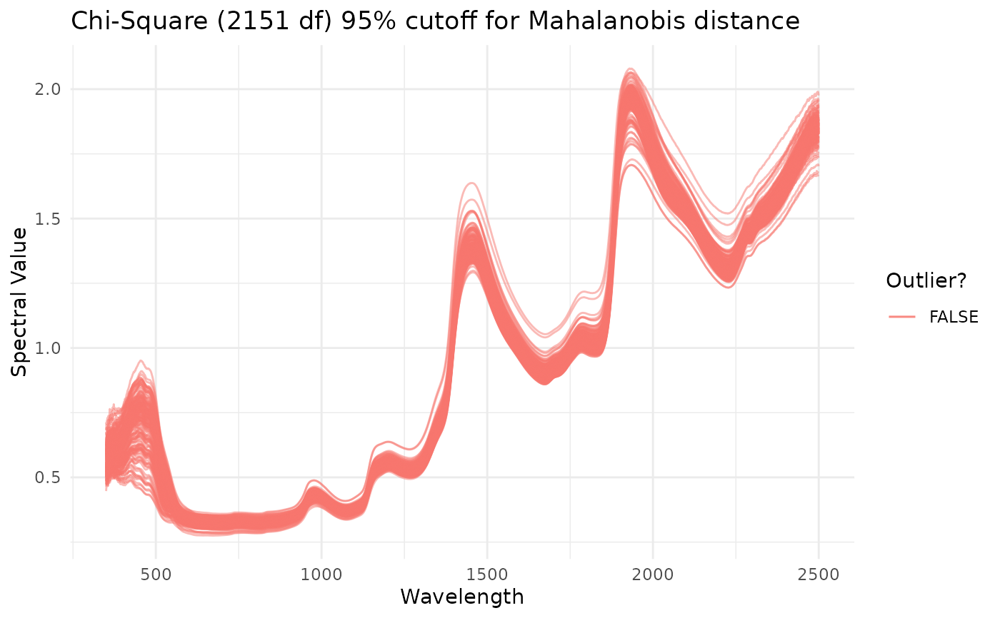

R/plot_spectra.R
plot_spectra.RdGenerates a ggplot object of given
spectra, with wavelength on the x axis and given spectral values on the y.
Mahalanobis distance is used to calculate outliers, which are both
identified on the plot. Rows from the original dataframe are printed to the
console for each outlier that is identified.
plot_spectra(
df,
num.col.before.spectra = 1,
window.size = 10,
detect.outliers = TRUE,
color = NULL,
alternate.title = "",
verbose = TRUE,
wavelengths = deprecated()
)data.frame object containing columns of spectra.
Spectral columns must be labeled with an "X" and then the wavelength
(example: "X740" = 740nm). Left-most column must be unique ID. May also
contain columns of metadata between the unique ID and spectral columns.
Cannot contain any missing values. Metadata column names may not start
with "X".
Number of columns to the left of the spectral matrix (including unique ID). Default is 1.
number defining the size of window to use when calculating the covariance of the spectra (required to calculate Mahalanobis distance). Default is 10.
Boolean indicating whether spectra should be filtered
before plotting. If TRUE, outliers are indicated by color in the
resulting plot. If verbose is also set to TRUE, outlier
metadata will be printed to the console. Default is TRUE.
String or vector of strings indicating colors to be passed to
ggplot. Default is default
ggplot colors.
String to be used as plot title. If
detect.outliers is TRUE, a descriptive title will be supplied.
If detect.outliers is FALSE, default is no title will be used.
If TRUE, the number of rows removed through filtering
will be printed to the console. Default is TRUE.
DEPRECATED wavelengths is no
longer supported; this information is now inferred from
df column names
If verbose, prints unique ID and metadata for rows identified as outliers. Returns plot of spectral data with non-outliers in blue and outliers in red. X-axis is wavelengths and y-axis is spectral values.
# \donttest{
library(magrittr)
ikeogu.2017 %>%
dplyr::rename(unique.id = sample.id) %>%
dplyr::select(unique.id, dplyr::everything(), -TCC) %>%
na.omit() %>%
plot_spectra(
df = .,
num.col.before.spectra = 5,
window.size = 15,
detect.outliers = TRUE,
color = NULL,
alternate.title = NULL,
verbose = TRUE
)
#> No outliers detected.

# }